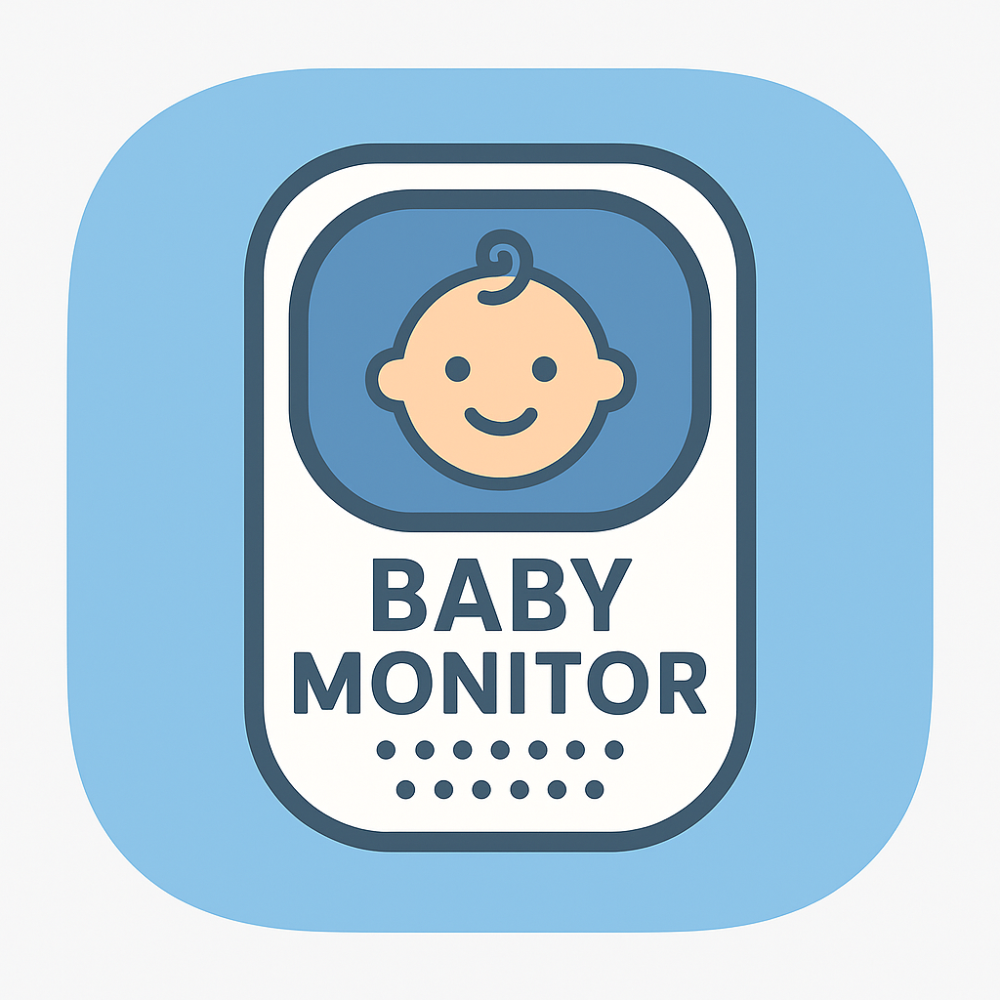

Software + UX
Smart Baby Monitor Android App
Built while I was preparing to become a father, this project started as more than just
an Android
development exercise. I wanted to create something practical, well-structured, and
genuinely useful:
an app that could help track the day-to-day details that quickly become important when a
new baby arrives.
This was the first phase of a smart baby monitor app built with Kotlin and Jetpack
Compose, and my first
serious experience working in the Android ecosystem with modern architectural patterns.
The app uses
MVVM, repositories, and reactive state to present a clean dashboard showing the latest
feeding, sleep,
measurement, and medication records for a selected baby profile. Local persistence was
handled with Room,
while Firebase Firestore was used for cloud syncing and live updates.
What I like about this project is that it combines personal motivation with solid
technical foundations.
It pushed me to learn Kotlin, Compose navigation, state management, dependency
injection, and structured
data flow, while also building something tied to a real-life need rather than a purely
theoretical brief.
- Kotlin / Jetpack Compose
- MVVM architecture with ViewModels and repositories
- Room for local storage
- Firebase Firestore for cloud sync and live updates